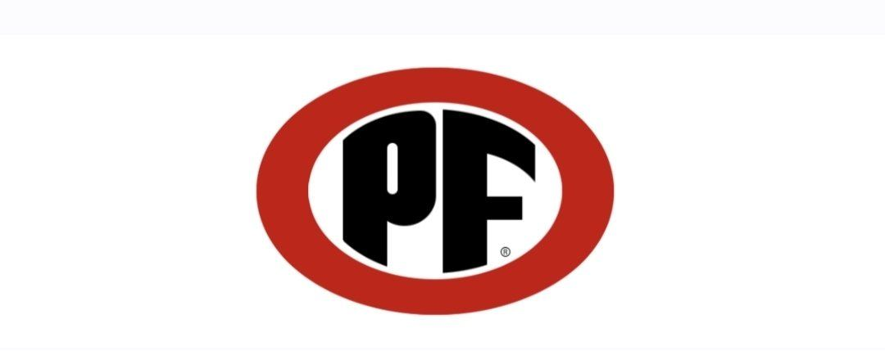
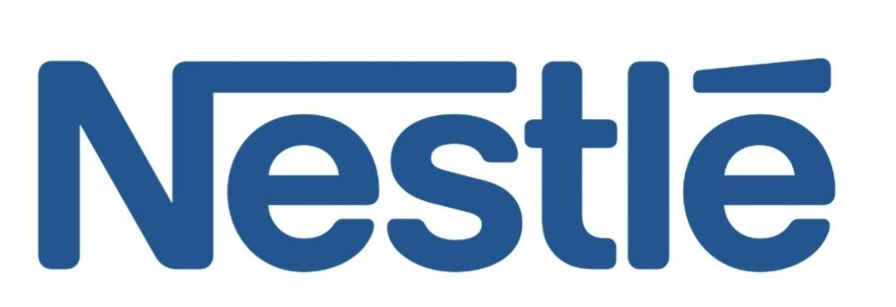
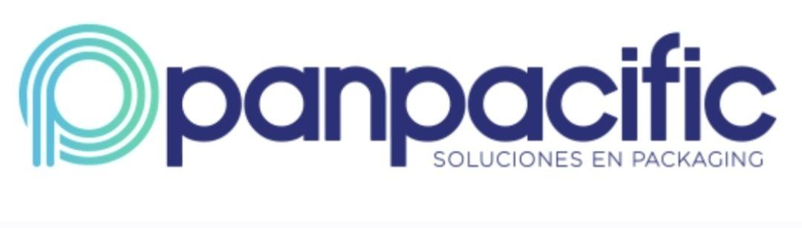
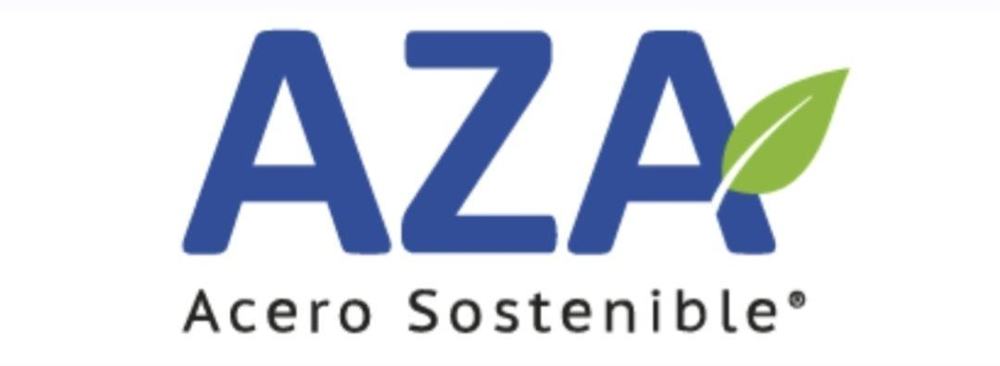

Inyección de plástico, desarrollo y fabricación de productos y proyectos a medida en Santiago
Desarrollamos productos industriales desde la ingeniería hasta la producción, incorporando tecnología antibacterial con partículas de cobre. Lo hacemos a partir del reciclaje industrial, otorgando nuevas oportunidades.
Desarrollo de productos a medida desde 100 unidades.

Constituida el 16 de enero de 2025 (Florida Division of Corporations, documento L25000025339). 2 S Biscayne Blvd Ste 3200 #4974, Miami, FL 33131. Ver certificado →
Somos una empresa chilena especializada en el desarrollo y fabricación de productos y proyectos de plástico y caucho termoplástico para la industria. Trabajamos junto a nuestros clientes desde la ingeniería del proyecto hasta la fabricación final, integrando matricería, inyección, extrusión y coextrusión bajo un mismo techo. Nuestra principal diferenciación es una innovación única en Chile: compuestos antibacteriales con partículas de cobre incorporadas directamente en la materia prima, otorgando protección permanente al producto.
Incorporamos partículas de cobre directamente en la materia prima durante el proceso de fabricación. No es un recubrimiento superficial: la protección forma parte del compuesto y se mantiene durante toda la vida útil del producto.
Proyecto desarrollado por la Universidad de Chile
Así trabajamos nuestras matrices: diseño, mecanizado CNC y ajuste de precisión en Santiago, para que cada molde salga listo para producción en serie.
Un proceso industrial completo, integrado en un solo lugar: desde el diseño de matrices hasta la producción en serie.
Fabricación de piezas de alta precisión y en serie, con diferentes tipos de termoplásticos.
Conocer más →Diseño y fabricación de matrices de precisión a medida para cada proyecto.
Conocer más →Producción de perfiles, láminas y tuberías, con opción de coextrusión para aplicaciones multicapa.
Conocer más →Desarrollo de productos especiales según necesidades técnicas, funcionales y de diseño.
Conocer más →Fabricación de piezas y perfiles flexibles, resistentes y de alta durabilidad.
Conocer más →Compuesto con partículas de cobre incorporadas en la materia prima, con protección activa y permanente.
Conocer más →Diseñamos y fabricamos matrices de precisión a medida para cada proyecto, la base técnica que asegura piezas consistentes y de alta calidad en toda la producción.
Cotizar →
Un proceso estructurado que asegura calidad y consistencia en cada etapa del proyecto.
Levantamiento de la necesidad y definición de forma y especificaciones técnicas.
Validación técnica y fabricación de moldes y herramental.
Fabricación industrial en serie con control de calidad en cada lote.
Despacho y seguimiento post-venta del proyecto.




Desarrollamos productos a medida desde 100 unidades.